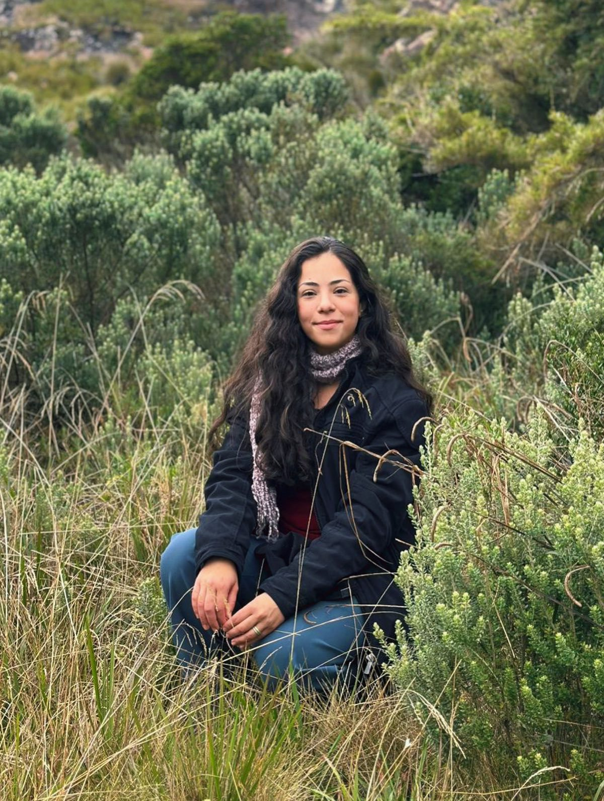

Currículo
Trajetória
Experiência, repertório e região de atendimento.

A música sempre fez parte da minha vida. Hoje, levo essa paixão para casamentos e eventos, transformando cada celebração em uma lembrança para sempre.
Laura canta há 7 anos, desde os 16. Sua voz foi formada no coral da igreja e no ministério como salmista, experiência que hoje leva para casamentos e celebrações no Sul de Minas.
Solicitar orçamentoExperiência
- Aos 16Início no cantoHá 7 anos cantando
- IgrejaCoral da igrejaCanto em conjunto e repertório sacro
- IgrejaSalmistaSalmos responsoriais nas celebrações
- CasamentosCerimônias de casamentoJá cantou em 2 casamentos
Repertório
Algumas músicas do repertório. Pedidos especiais podem ser combinados com os noivos e anfitriões.
- Aliança Eterna
- Como És Lindo
- Pelas Ruas da Cidade
- Ave Maria
- Sagrada Família
- Mais que Amigos
- Salmos responsoriais
- Salmos matrimoniais
Região
Atende casamentos e eventos no Sul de Minas Gerais:
- Pouso Alto
- Virgínia
- Itanhandu
- Itamonte
- Passa Quatro
- São Lourenço
- Caxambu
- Soledade de Minas
Valores a combinar
Vamos conversar sobre o seu evento?
Envie a data, o local e o tipo de celebração para receber uma proposta.
Entrar em contato